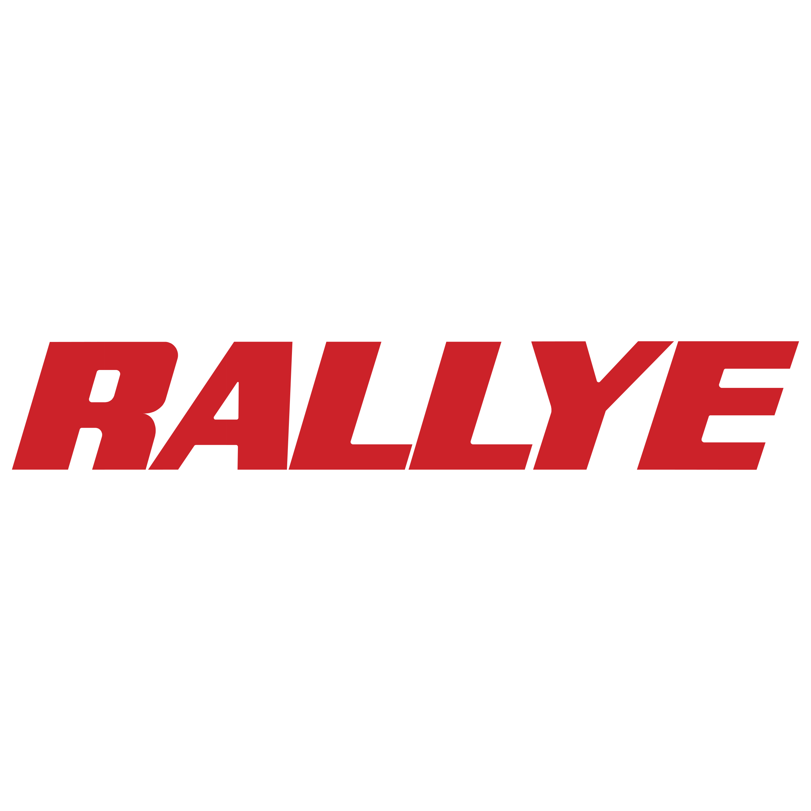
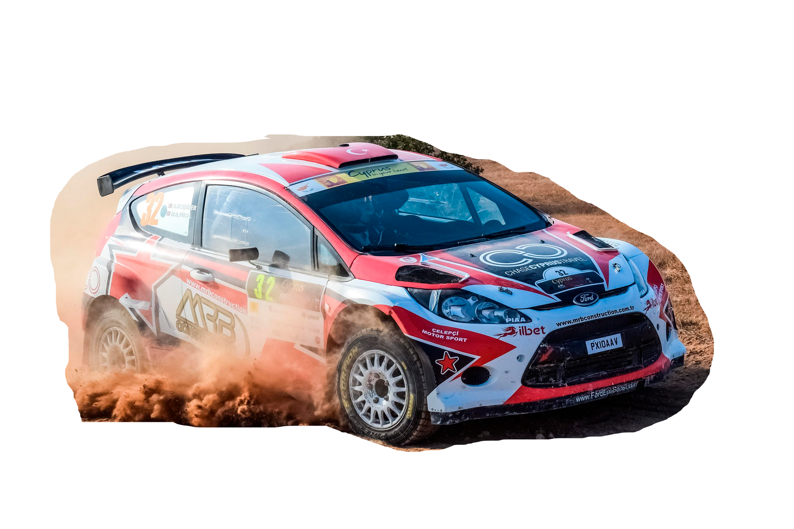
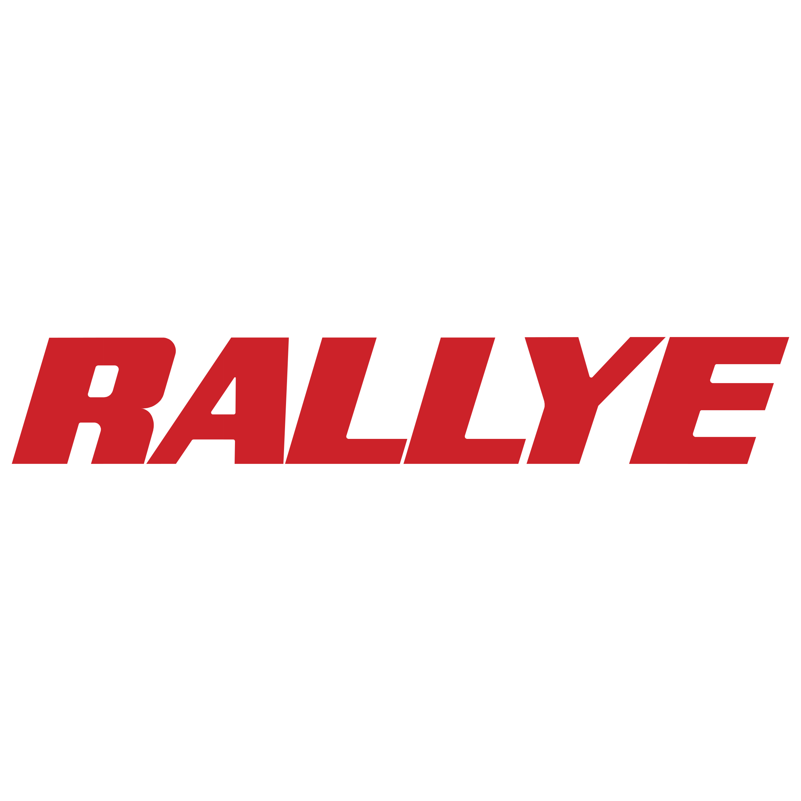
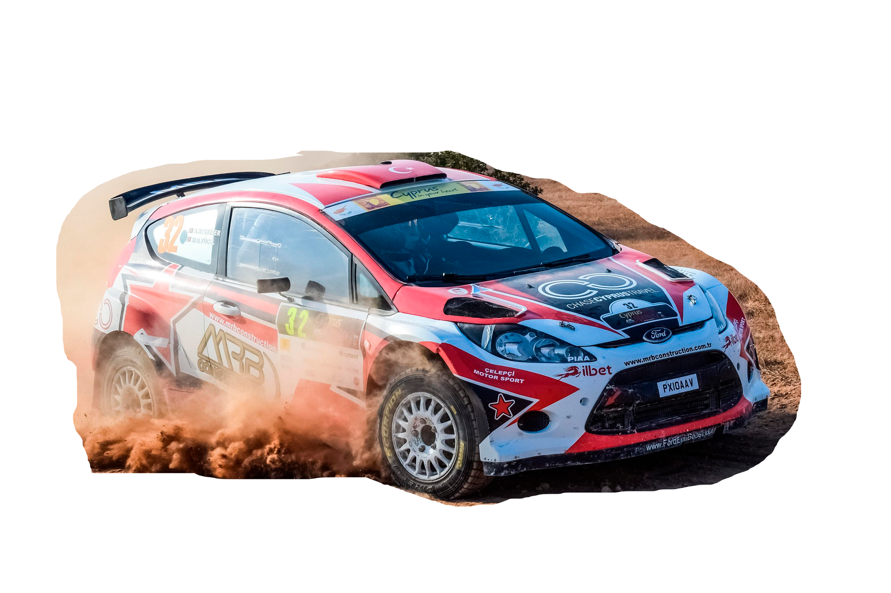

is a digital manipulation project focused on visual storytelling and extreme climate environment. The composition was built using multiple image sources, including terrain, mountain, fog, and ice elements — combined to create a rally scene set in a frozen sector. The main goal was to explore the contrast between speed and environment, highlighting the car as the focal point in the middle of heavy fog, enhanced by realistic textures and soft lighting. Every detail — from the frozen castle to the harsh climate and cold color palette — was designed to emphasize the tension and danger of racing in the most critical stage of the competition. Fully edited in Photoshop
é um projeto de manipulação digital com foco em narrativa visual e ambientação climática extrema. A composição foi constrídau com múltiplas fontes de imagem, incluindo elementos de terreno, montanha, neblina e gelo, combinados para criar uma cena de rally em região glacial. O objetivo principal foi explorar o contraste entre movimento e ambiente, destacando o carro como ponto focal em meio à névoa densa, reforçada por texturas realistas e iluminação difusa. Todos os detalhes, como o castelo congelado, o clima extremo e a paleta fria, foram planejados para reforçar a tensão e o risco da corrida no setor mais crítico da competição. Edição completa feita no Photoshop


 




dives into the world of extreme racing across desert dunes — presented in two complementary versions: the blinding chaos of daylight and the mysterious tension of night. A visual journey where every light and shadow tells a story of speed.


Thanks for scrolling! I hope my art inspired you in some way.
Obrigado por chegar até aqui! Espero que minha arte tenha te inspirado de alguma forma.
Created by Arthur morais — 2025 All visuals developed in Photoshop